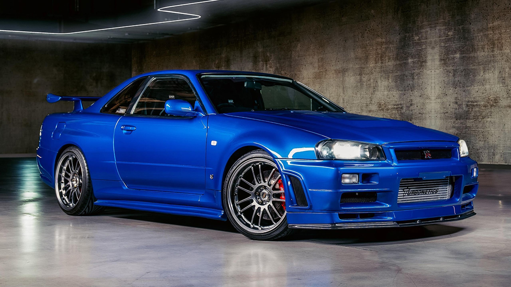

Nissan Skyline R34
Der Nissan Skyline R34 ist wirklich ein faszinierendes Fahrzeug! Seine Kombination aus markantem Design und leistungsstarkem Motor hat ihn zu einem echten Klassiker gemacht. Der RB26DETT-Motor ist besonders bemerkenswert, da er nicht nur für seine Leistung, sondern auch für sein großes Tuning-Potenzial bekannt ist. Viele Autofans schätzen die Möglichkeit, den R34 individuell anzupassen und zu optimieren..
Mehr über den R34 Galerie ansehen
Toyota Supra MK4
Der Toyota Supra MK4, auch bekannt als A80, ist ein wahrer Klassiker unter den Sportwagen. Mit seinem markanten Design und der kraftvollen 3,0-Liter-Reihen-Sechszylinder-Maschine, die mit einem Turbolader ausgestattet ist, bietet er nicht nur beeindruckende Leistung, sondern auch ein unverwechselbares Fahrgefühl.
Mehr über den Supra Galerie ansehen